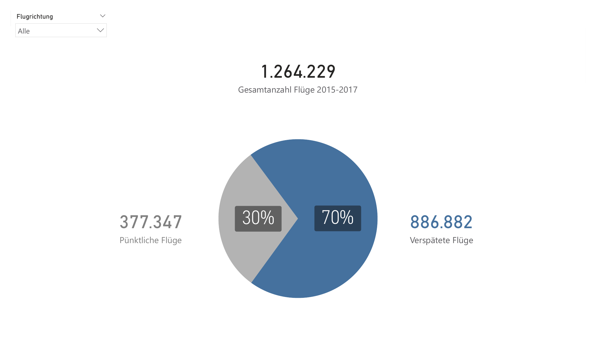
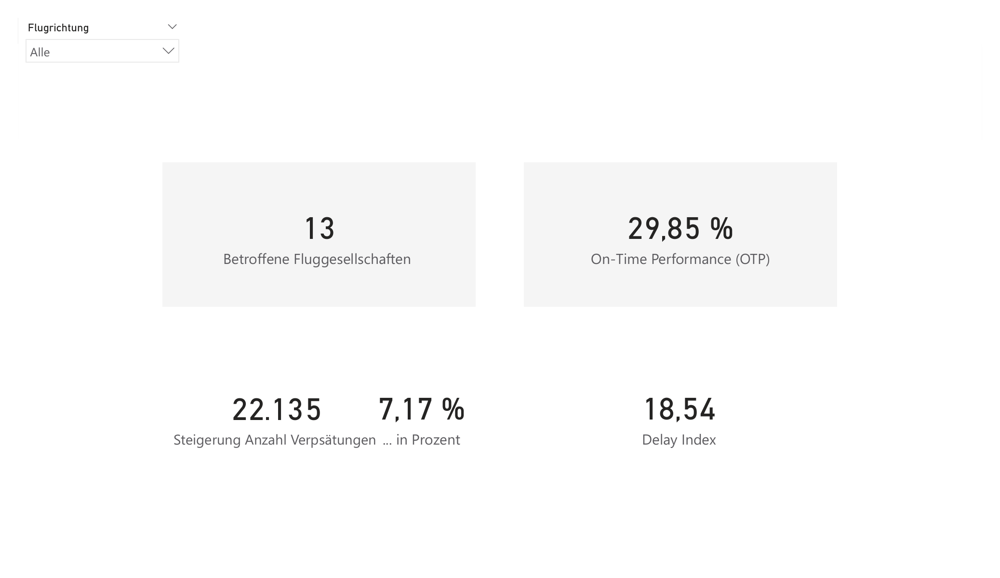
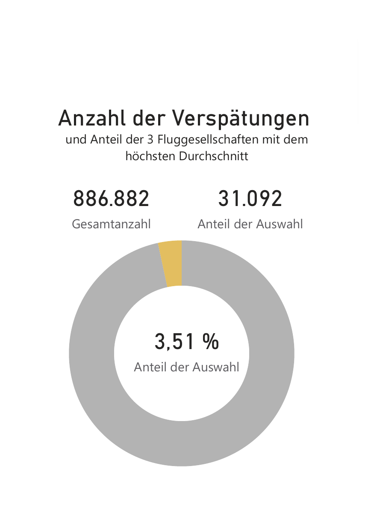

fLAirport
Analyse unpünktlicher Flüge
Los Angeles International Airport, 2015–2017
1.264.229
Flüge 2015–2017 (LAX)
70 %
unpünktlich (≥ 5 Min.)
29,85 %
On-Time Performance
26,42 Min.
Ø Verspätung pro Flug
Start
KennzahlenGesamtüberblick
1.264.229 Flüge, 2015–2017

1.264.229 Flüge 2015–2017 an LAX — 377.347 pünktlich (30 %), 886.882 verspätet (70 %).
Kennzahlen im Detail

13 betroffene Fluggesellschaften, On-Time Performance 29,85 %, Delay Index 18,54.
Anteil der Top-3 an der Gesamtverspätung

31.092 von 886.882 Verspätungen = 3,51 % — die 'unpünktlichsten' Airlines sind kaum relevant für die Gesamtzahl.
Wichtige Erkenntnis: Indikator verzerrt
Die höchste durchschnittliche Unpünktlichkeit erlaubt eine gewisse Verzerrung der Werte und eignet sich nicht zuverlässig als Indikator. Airlines mit extremen Durchschnittsverspätungen haben oft nur wenige Flüge — ihr hoher Durchschnitt hat wenig Einfluss auf die Gesamtzahl der Verspätungen. Der Wert ignoriert die Häufigkeit verspäteter Flüge im Verhältnis zur Gesamtzahl.
Zeitliche MusterErkenntnisse Zeitebenen
Langfristig — Jahre, Quartale, Monate
- Über die Jahre insgesamt steigende Verspätungen
- Saisonale Muster: Anstieg in Q2, Spitzenwerte in Q3, niedrigster Wert in Q1
- Feiertage und Urlaubszeiten lassen sich deutlich ablesen
Kurzfristig — Wochentage, Tagesstunden
- Tagesansicht zeigt starke OTP-Schwankungen — Unbeständigkeit im operativen Ablauf
- Samstag: deutlich geringste Anzahl und Summe an Verspätungen
- Freitag, Sonntag und Montag: Werte steigen wieder deutlich an
- Peaks am Morgen (6–7 und 8–9 Uhr) und am späten Nachmittag
Handlungsempfehlungen
Aus den gesammelten Erkenntnissen
Operative Planung optimieren
Saisonale und wöchentliche Muster in die Planung einbeziehen- Analysierte langfristige saisonale Häufungen sowie Erkenntnisse aus Wochen- und Tagesansicht verstärkt berücksichtigen
- Spitzenwerten gezielt vorbeugen
- → Informationen teilen und in Planungen berücksichtigen
Research fortführen
Ursachen extremer Ausreißer klären- Teils extreme Spitzen in Anzahl und Summe der Verspätungen erkennbar
- Auslöser sollten aufgeklärt werden, um Wiederholungen zu vermeiden
- → Erkundigungen bei Fachabteilungen einholen
Indikator verbessern
Aussagekräftigere Kennzahlen kombinieren- Ø-Verspätung pro Flug zeigt die Schwere, nicht die Häufigkeit oder den Einfluss auf den Gesamtflugverkehr
- Sinnvolle Kombinationen: On-Time Performance & Summe, Anzahl & Summe, Delay Index
- → Identifikation geeigneter Indikatoren